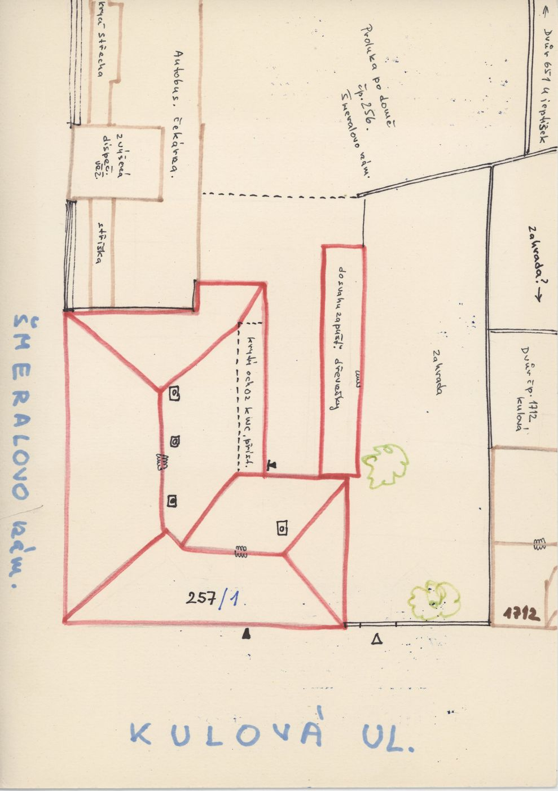
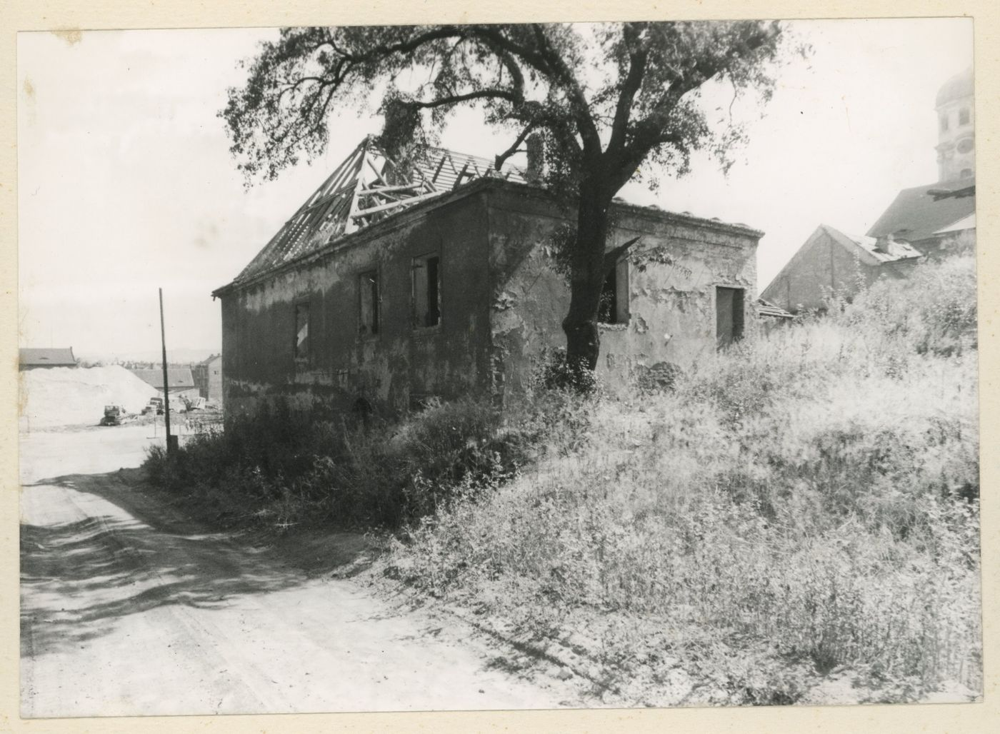
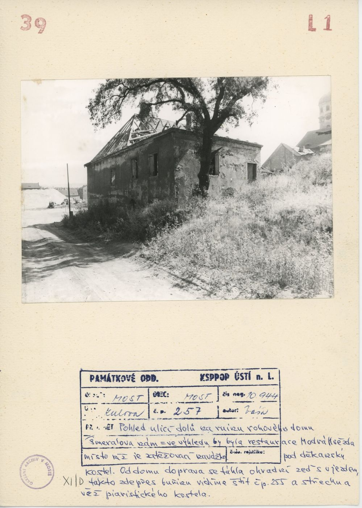
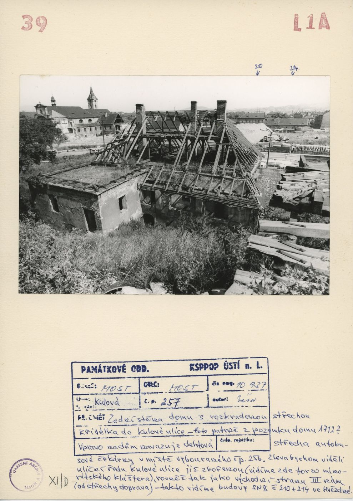
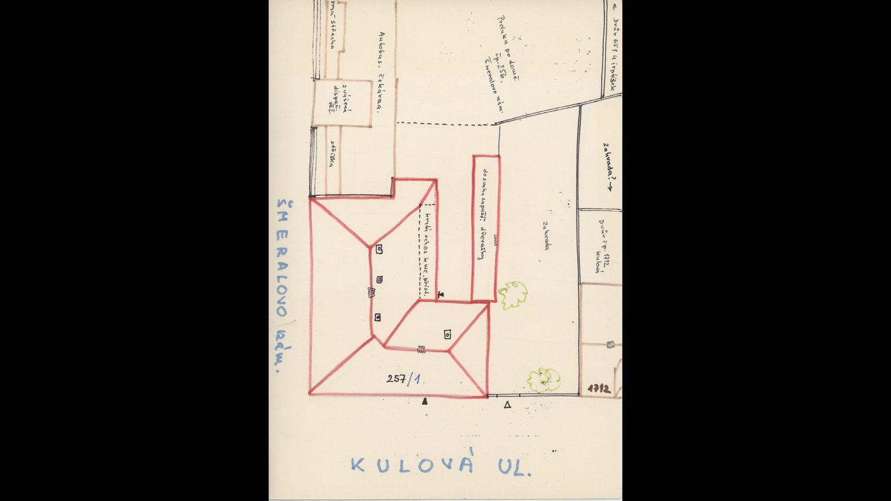
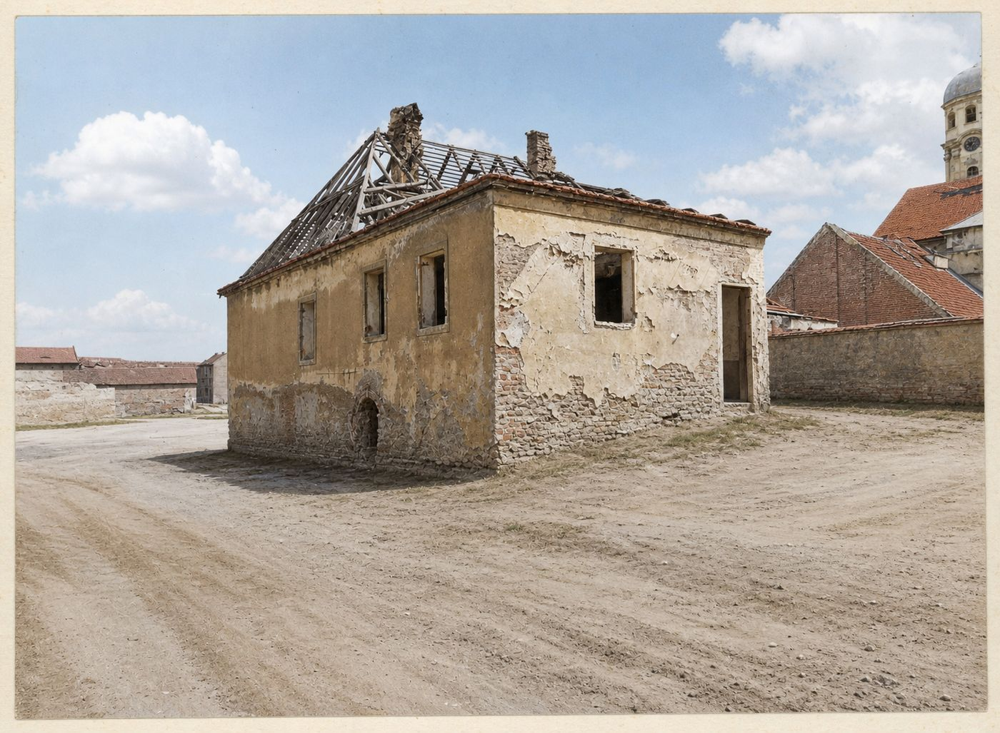
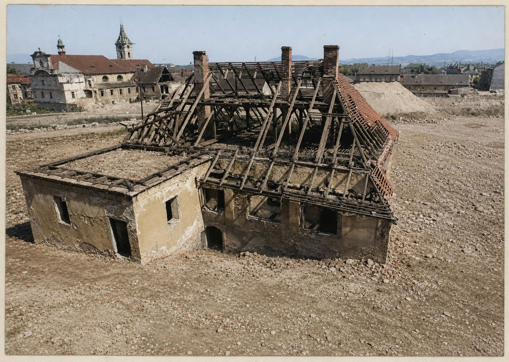
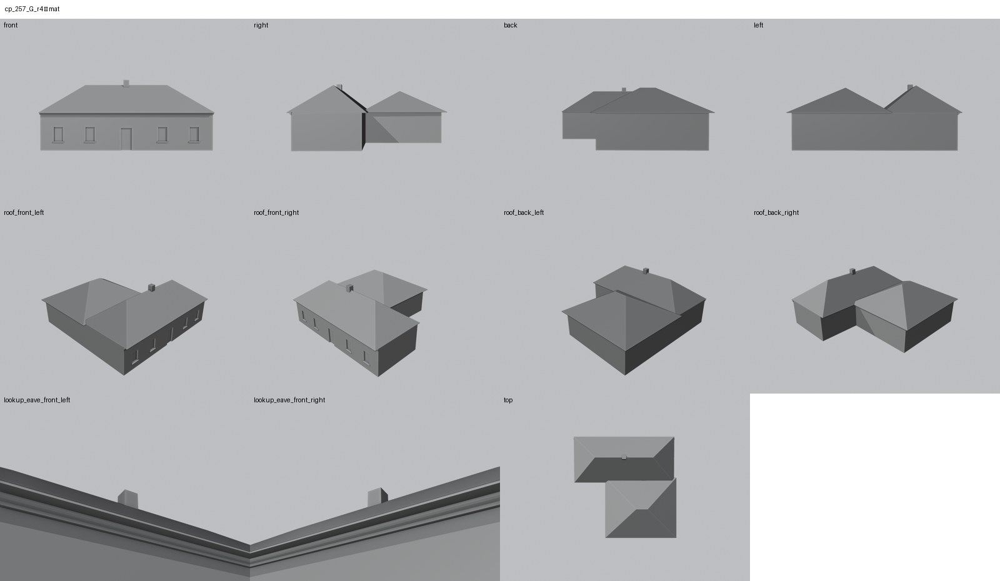

Identita domu
Přízemní starý dům s valbovou střechou, na kartách už jako ruina s odkrytým krovem; půdorys tvaru L se zadním křídlem. Karta ze schodů zmiňuje „zídku s vraty do zahrady čp. 257 Šmeralovo nám.“
Použité prameny: karty cp_257_001 a cp_257_002, GIS půdorys.
Přílohy v databázi (7)
Všechny přílohy struktury 257 v databázi Libuše, načtené 18. 10. 2026 a otevřené. Kliknutím otevřete větší náhled.


plán / výkres
SHA-256 10adba4fe0f6…


fotografie
SHA-256 7ee75ddcc621…


archivní karta
SHA-256 76f4070f8143…


archivní karta
SHA-256 71307327dbe6…


odvozenina (kolorovaná / FRONT)
SHA-256 29b238b95138…


odvozenina (kolorovaná / FRONT)
SHA-256 9fa3f9a22600…


odvozenina (kolorovaná / FRONT)
SHA-256 7d54a927ec8c…
Geometrie
| Revize geometrie | r4 |
|---|---|
| Poloha | GIS půdorys id 314 (ulice Kulová) |
| Šířka průčelí | 19,03 m |
| Výška okapu | 4,20 m (odhad) |
| Podlaží | 1 |
| Střecha podle pramenů | valba |
| Otvory / vikýře | 5 / 0 |
| Polygonů | 169 |
| Kontrola podkroví (19. 10. 2026) | prošla: vlasové zásahy do podkroví 0 ze 103 680 paprsků ze 120 pohledů; nekryté zdivo 0,00 m², střecha nad prázdnem 0,00 m² |
Kontrolní pohledy

Textury
zatím bez textur
Až Codex dodá texturovaný model, objeví se v prohlížeči nahoře volba Textury (Codex).
Hypotézy
Vše níže je model_hypothesis, provisional, locked: false.
- počet a poloha otvorů odhad (fotografie šikmá, dům zarostlý)
- zadní křídlo jako hmota z GIS
Soubory
- Geometrie čp. 257, GLB
- Pracovní model: F:\MOST\output\kulova_eave_fix_claude_2026-10-19\houses\cp257\r4\cp_257_G_r4.blend
- Plán modelu: F:\MOST\output\kulova_eave_fix_claude_2026-10-19\houses\cp257\geometry_plan.json